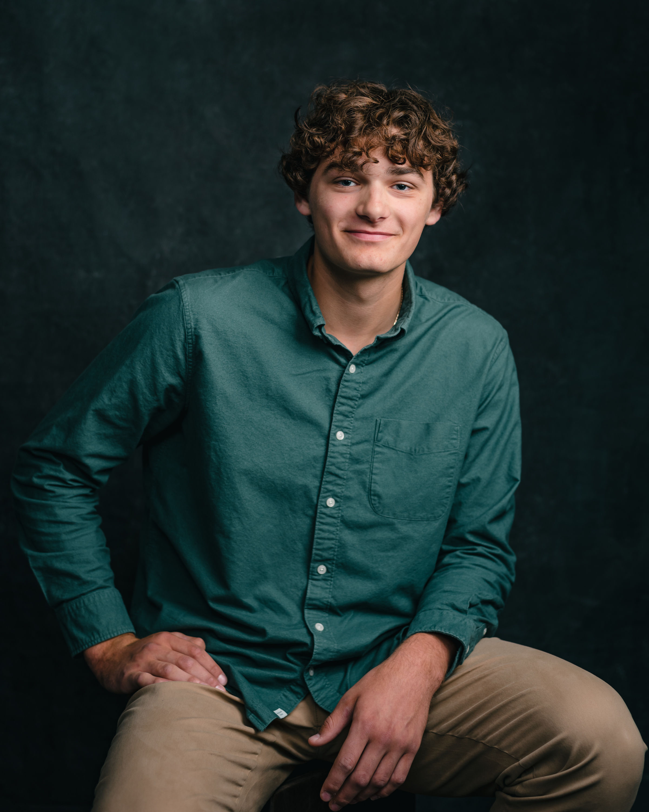
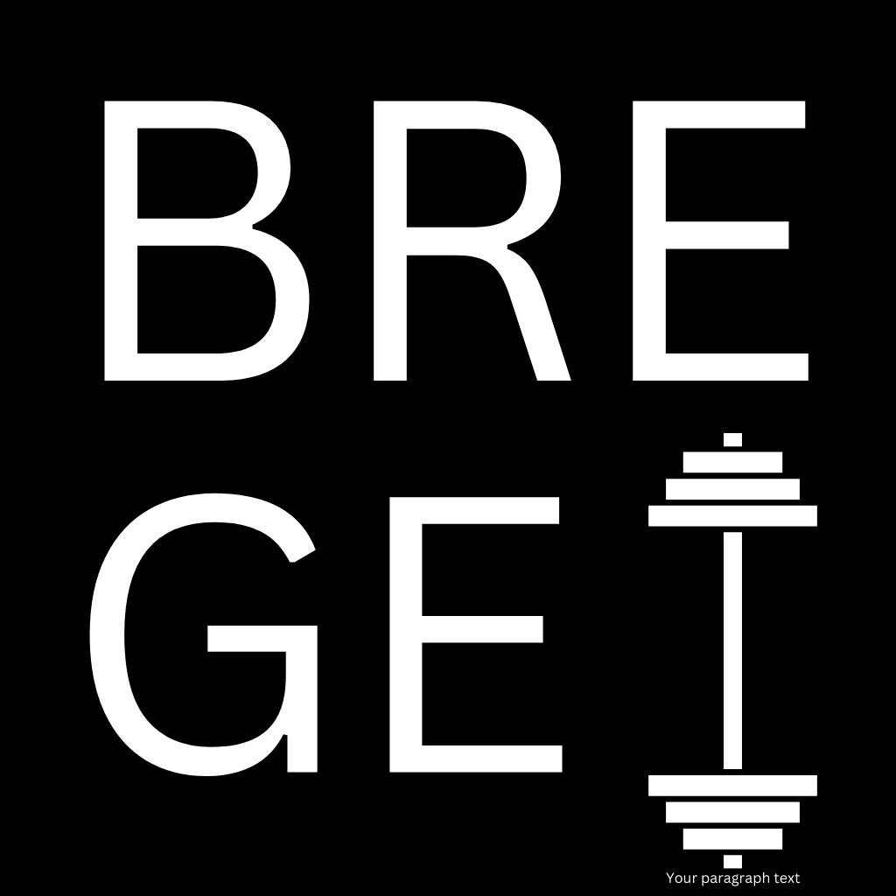

This is my personal site to showcase my academic, personal, and work related accomplishments.
Personal Life
My hobbies include weightlifting, golf, snowboarding, studying quantum algorithms, and programming.
I follow a strict weightlifting regiment and diet, this allows me to stay consistent in other aspects of my life. I find the more consistent I am with my diet and exercise, the better I feel, the better I can focus, and the better I become. This all translates to steady growth as a software engineer as well, teaching me to stay consistent.
Academics
Associate of Arts in Computer Information Systems - 3.5 GPA
Alpena Community College - Early College Program
2021-2023
Bachelor of Science in Computer Science - 3.57 GPA
Northern Michigan University
2023-2025
QAE is a project that I made to document my summer quantum algorithm studies. I find that the best way for me to learn, is to teach, so I made this website to display my understanding of these algorithms, while also educating myself.
This was an API that I created for a web app that I wanted to make that would act as a Strava for programming to track progress in projects. While the project's development is on standby due to my preparation for graduate school, I still find the idea useful.
Although it isn't anything crazy, I wanted this to be a project that showcases the best practices I've learned from my internship at Northcross Group. Along with a peek into my Node.js capabilities.
This is a lexer built in C++ that can tokenize: Functions, Types, Arrays, Arithmetic Expressions, etc. This was a great
exercise to learn about the low-level aspect of programing languages that can be so far overlooked while working with
higher level languages.
This is a webscrpaing project that is still under development that in the end, will show teams win/loss data in graphs, winning streaks, and even a link to the programs funding from the university to their win/loss. This all with other plans ahead to customize these graphs in the future of development.

I would consider lifting to be a large hobby in my life. I knew that there was already lift tracker apps available, but I wanted to make my own. So I did, and it's a great way for me to track progress in my lifts. An app I use everyday and one that I am proud of.
While this app isn't used a frequently for me. Whenever I want to switch my calorie intake to switch from a bulk, to a cut, or even a maintenance, this is the app I go for immediately.
Again, made in Swift, I took the top 3 methods of calculating macronutrient information, and averaged them out to get the most accurate number to ensure my progress in the gym.
This is a project that I made for my CS495 class at NMU. It uses PHP to webscrape salary, and weight data, linking them in an SQL database, and displaying the link between an NBA players weight and salary.
I see this as a gag concept, but the technical skills that I learned to pull it off were very useful in my development journey.
Below is a short demo, which shows the capabilities of the chart to scale up and down depending on the weight entered.
Bored at work one summer, I had a free afternoon and wanted to mess around with image processing as I had kept hearing about all of the fun things people were doing with it. It was a fun project that I used to find my face in other pictures, and a fun one to show off.